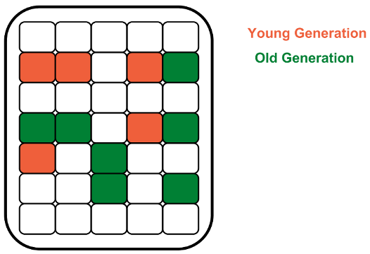
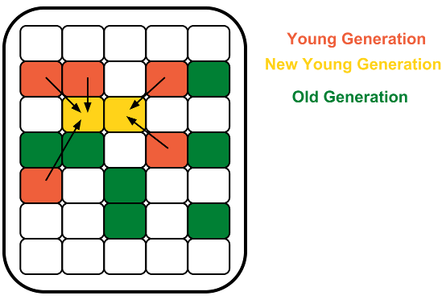
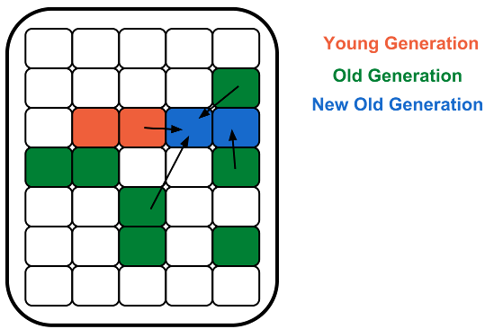

Your browser doesn't support the features required by impress.js, so you are presented with a simplified
version of this presentation.
For the best experience please use the latest Chrome, Safari or Firefox browser.
Garbage Collector
и управление памятью
в HotSpot JVM
G1, большие надежды
Особенности:
Вся память разбита на регионы(1Mb по умолчанию)
Сборка производится эвакуацией регионов
Лоялен к большим размерам Heap
Отсутствует фрагментация
Отсутствует FullGC
Предсказуемость
Доступен в HotSpot JVM с 6u26
Включение: -XX:+UseG1GC
G1, сборка мусора в YoungGen

G1, сборка мусора в YoungGen
Особенности:
Вся эвакуация регионов
Быстрое выделение памяти, сдвиг указателя
Размер молодого поколения "резиновый"
G1, сборка мусора в YoungGen

G1, сборка мусора в OldGen
Особенности:
Mark фаза над всеми живыми объектами(фоновый режим)
Подсчет всех живых объектов по регионам
Эвакуация регионов с наименьшим колличеством живых объектов
Сборка происходит постоянно
Запуск FullGC только при не хватке ресурсов
G1, сборка мусора в OldGen

G1, предсказуемость
Задаваемые желаемые паузы
-XX:MaxGCPauseMillis=200
-XX:GCPauseIntervalMillis=500
Автоматическая настройка размеров очищаемой памяти в зависимости от желаемой паузы
G1, выводы
Главныйы конкурент CMS
Отсутствие фрагментации
Не ограничен размером heap
Есть куда рости
далее >